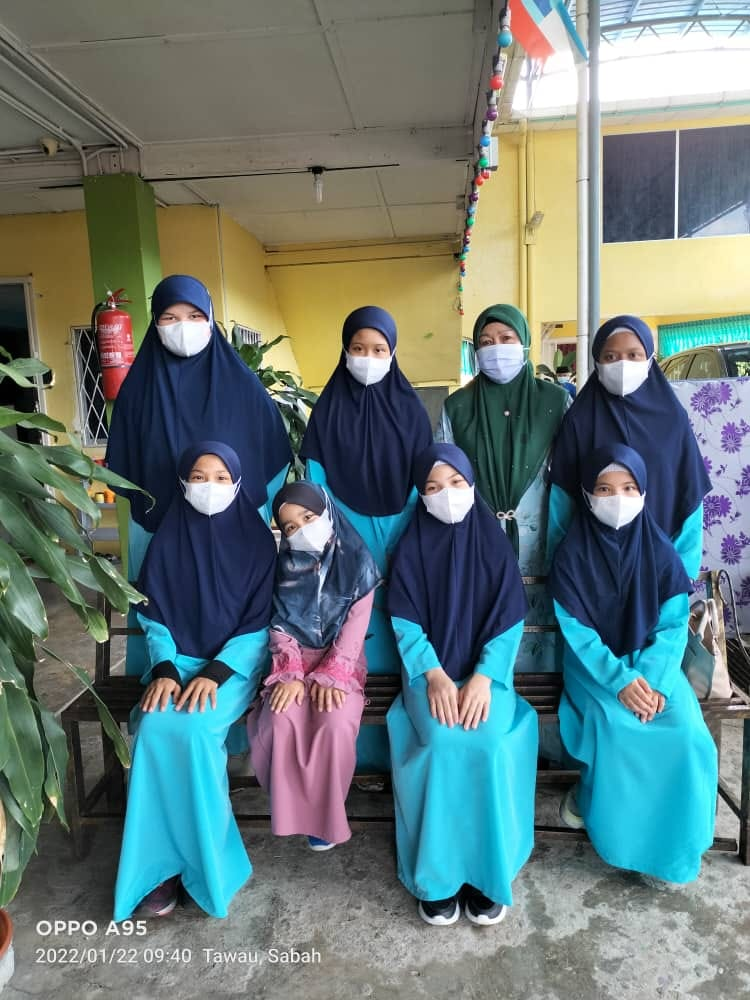
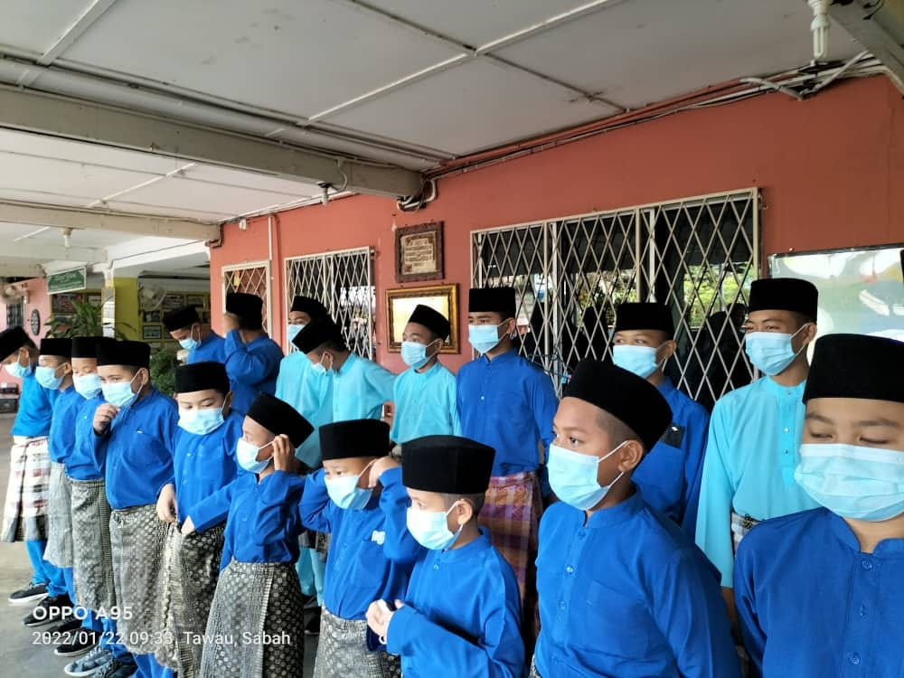
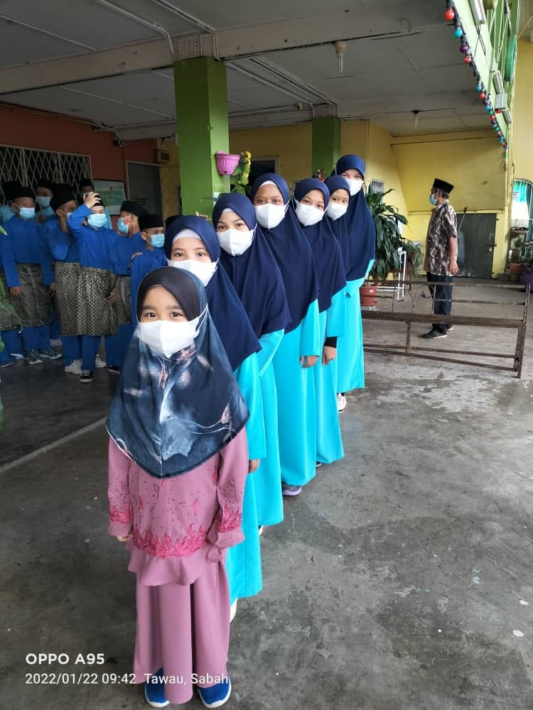

ABOUT RUMAH ANAK YATIM AR RAUDHOH TAWAU



Ibn Sa’d reported: The Prophet, peace and blessings be upon him, said, “The one who cares for an orphan and myself will be together in Paradise like this,” and he held his two fingers together to illustrate.
سَهْلَ بْنَ سَعْدٍ عَنْ النَّبِيِّ صَلَّى اللَّهُ عَلَيْهِ وَسَلَّمَ قَالَ أَنَا وَكَافِلُ الْيَتِيمِ فِي الْجَنَّةِ هَكَذَا وَقَالَ بِإِصْبَعَيْهِ السَّبَّابَةِ وَالْوُسْطَى
5659 صحيح البخاري كِتَاب الْأَدَبِ بَاب فَضْلِ مَنْ يَعُولُ يَتِيمًا
Abu Huraira reported: The Messenger of Allah, peace and blessings be upon him, said, “The best house among the Muslims is the one in which an orphan is treated well. The worst house among the Muslims is the one in which an orphan is mistreated. The one who cares for an orphan and myself will be in Paradise like this,” and he held his two fingers together.
Source: Al-Adab Al-Mufrad 137 Grade: Hasan (fair) according to Al-Bukhari
عَنْ أَبِي هُرَيْرَةَ قَالَ قَالَ رَسُولُ اللهِ صلى الله عليه وسلم خَيْرُ بَيْتٍ فِي الْمُسْلِمِينَ بَيْتٌ فِيهِ يَتِيمٌ يُحْسَنُ إِلَيْهِ وَشَرُّ بَيْتٍ فِي الْمُسْلِمِينَ بَيْتٌ فِيهِ يَتِيمٌ يُسَاءُ إِلَيْهِ أَنَا وَكَافِلُ الْيَتِيمِ فِي الْجَنَّةِ كَهَاتَيْنِ يُشِيرُ بِإِصْبَعَيْهِ
137 الأدب المفرد البخاري بَابُ خَيْرُ بَيْتٍ بَيْتٌ فِيهِ يَتِيمٌ يُحْسَنُ إِلَيْهِ
"Treat not the orphan with harshness" (Qur’an 93:9)
Orphan welfare is a recurring theme in the Qur’an. Verses encouraging good treatment of orphans are found throughout it. Creating a sense of responsibility towards orphans, the Qur’an says:
"They ask you, (O Muhammad), what they shall spend. Say: that which you spend for good (must go) to parents and near kindred and orphans and the needy and the wayfarer. And whatsoever good you do, lo! Allah is Aware of it." (Qur’an 2:215)
Orphans have a unique place in Islam and share an affinity with Prophet Muhammad (Allah bless him and give him peace) who lost both his parents by the age of six. His orphaned childhood is the subject of some of the earliest verses of the Qur’an:
"Did He not find you an orphan and give you shelter?" (Qur’an 93:6)
This affinity between the orphan and the Prophet (Allah bless him and give him peace) is expressed with great clarity in the sacred tradition (hadith) There is a promise of Paradise for anyone who looks after an orphan:
"I, and the one who looks after an orphan, will be together like this in the next world", then he raised his index and middle fingers together. (Hadith Muslim)
The important lesson Muslims have taken from this well-known hadith is that to choose the companionship of an orphan is to choose the companionship of the Prophet himself (Allah bless him and give him peace).
{kind=link}